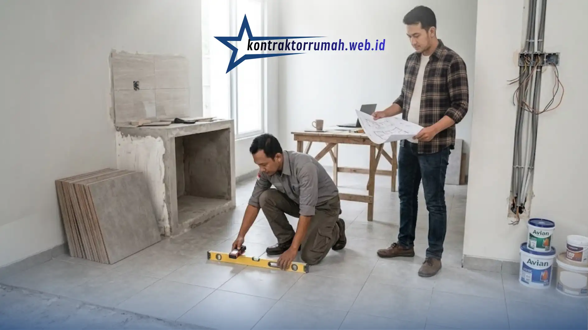

Merencanakan renovasi rumah tanpa anggaran yang matang sama saja dengan berjalan di dalam gelap. Kesalahan terbesar yang sering dilakukan pemilik rumah adalah meremehkan perhitungan biaya, sehingga proyek terhenti di tengah jalan karena kekurangan dana.
Karena itu, memahami cara membuat RAB renovasi rumah (Rencana Anggaran Biaya) secara detail adalah langkah pertama yang paling krusial sebelum memanggil tukang atau kontraktor. RAB berfungsi sebagai peta finansial proyek Anda. Berikut panduan langkah demi langkah untuk menyusunnya secara akurat.
Poin Penting
- Susun daftar item pekerjaan lalu kelompokkan ke dalam kategori persiapan, struktur, plafon, lantai, dan finishing.
- Volume pekerjaan dihitung dari luas atau panjang area yang direnovasi, misalnya m² untuk lantai dan dinding.
- Pisahkan riset harga material dari upah tenaga kerja (sistem harian maupun borongan) agar RAB lebih akurat.
- Rekap seluruh perhitungan dalam tabel spreadsheet: Nomor, Jenis Pekerjaan, Volume, Satuan, Harga Satuan, dan Total Harga.
- Sediakan dana darurat 10–15% dari total RAB untuk mengantisipasi kenaikan harga atau perubahan desain.
Tentukan Skala dan Item Pekerjaan
Buat daftar rinci apa saja yang akan direnovasi—mengganti keramik, membongkar atap, atau menambah kamar baru—lalu kelompokkan menjadi beberapa kategori:
- Pekerjaan persiapan & pembongkaran
- Pekerjaan struktur & dinding
- Pekerjaan plafon & atap
- Pekerjaan lantai & keramik
- Pekerjaan pengecatan & finishing
Hitung Volume Pekerjaan
Volume dihitung berdasarkan luas atau panjang area yang direnovasi. Misalnya, mengganti keramik kamar berukuran 3 x 4 meter berarti volume pekerjaan lantainya adalah 12 meter persegi (m²).

Menghitung volume pekerjaan secara akurat menjadi dasar utama sebelum menyusun RAB renovasi rumah.
Riset Harga Material dan Upah Tenaga Kerja
Lakukan survei harga material terbaru di toko bangunan terdekat atau marketplace. Pisahkan harga material utama (semen, pasir, keramik) dari upah tenaga kerja, baik sistem harian maupun borongan.
Buat Format Tabel Rekapitulasi RAB
Susun perhitungan dalam tabel spreadsheet sederhana yang mencakup: Nomor, Jenis Pekerjaan, Volume, Satuan, Harga Satuan, dan Total Harga.
Contoh Perhitungan RAB Pengecatan Kamar
Sebagai ilustrasi, berikut contoh perhitungan pengecatan dinding kamar berukuran 3 x 4 meter dengan tinggi 3 meter (total luas dinding sekitar 42 m²):
| Komponen | Rincian |
|---|---|
| Volume pekerjaan | 42 m² |
| Cat dinding (1 pail / 5 kg) | Rp 150.000 |
| Kuas & roller | Rp 50.000 |
| Plamir & amplas | Rp 50.000 |
| Total biaya material | Rp 250.000 |
| Upah tukang borongan (Rp 20.000/m² x 42 m²) | Rp 840.000 |
| Total sub-biaya pekerjaan pengecatan | Rp 1.090.000 |
Tips Mengelola RAB agar Tidak Membengkak
Selalu sediakan dana darurat (contingency cost) sebesar 10–15% dari total RAB. Dana ini berguna untuk mengantisipasi kenaikan harga bahan bangunan, perubahan desain di tengah jalan, atau perbaikan tak terduga saat pembongkaran.
Perhatikan juga sistem upah yang dipilih: upah harian cocok untuk pekerjaan kecil atau perbaikan ringan tanpa target volume, sedangkan upah borongan dihitung per unit pekerjaan selesai dan umumnya lebih efisien serta mudah diprediksi biayanya untuk proyek renovasi berskala lebih besar.
Dengan RAB yang terstruktur, proses renovasi akan berjalan jauh lebih efisien, transparan, dan bebas stres. Simpan template perhitungan ini dan sesuaikan dengan kebutuhan renovasi Anda sebelum mulai negosiasi dengan tukang.
FAQ Seputar RAB Renovasi Rumah
Butuh bantuan menyusun RAB renovasi yang lebih akurat? Tim jasa renovasi bangunan kami siap membantu mulai dari survei lapangan hingga eksekusi proyek.